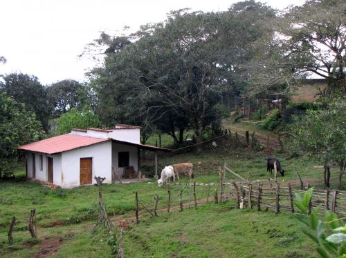

Velasquez Family News

©2007 Velasquez Family Coffee


March 2013 Coffee News
-To Honduras and Back Again
-"La Roya" - A National Emergency
To Honduras and Back Again
In an attempt to hold onto a little bit of the sweetness of our recent trip to Honduras, I've changed the photo on my computer desktop to a view of our little cabin on the coffee farm where I spent my mornings reading on the front porch. Guillermo would get up early and go up to his parents house for coffee and conversation and then kindly sent our daughter and niece back to the cabin with a cup for me. The cows would come by to visit. The view of the mountain was amazing. All in all, it was delightful. You can see this picture and a few more in a slideshow of our trip on our Facebook page. You can also read highlights from our trip in the newsletter that follows.
In spite of all the bad news about violence and instability in Honduras, we found our family and the places they live to be largely uneffected. The 3 hour drive from San Pedro ("the murder capital of the world") was uneventful (pleasant even, with a stop for freshly picked pineapple at a roadside stand, and another stop at the Lago de Yahoa to soak up some sun near the beautiful mountain lake). We spent the first day and the last with Guillermo sisters who live side by side in a quiet colonia on the outskirts of Comayagua. We did a little shopping and made our customary evening visit to the city plaza. Up on the farm, we toured the coffee, talked about "la roya" a lot (see the next section for more on the spread and impact of coffee rust), enjoyed freshly baked bread and many cups of coffee, and generally passed the time in steady conversation and story telling. Mostly the weather was pleasantly warm, but a cold front did come through bringing chilly rain for a couple of days. Thankfully, Guillermo's brother Avilio had recently built a charming fireplace in his house to hold off the damp chill.
As hoped, we were able to give a financial update to the family and we negotiated quantity and price for our next coffee shipment. We also worked out a payment schedule works for all of us, providing them with funds when they need it most and giving us more cash flow flexibility and predictability.
"La Roya" - A National Emergency
As we mentioned above, the talk everywhere we went was the outbreak of "La Roya", coffee rust, that is devastating coffee harvests throughout Central America. La roya appears as an orange dust on the leaves compromising the plant's ability to photosynthesize and thus produce coffee berries. Leaves drop and berries are mostly empty. Instead of their usual lush green, coffee plantations are left looking like dead sticks poking out of the ground. And farmers are left without a harvest. The governments of Guatemala, Honduras and Costa Rica have declared national emergencies over the plague that threatens the livelihoods of coffee farmers, the farm workers who pick the coffee and the fragile economies of this region that depend largely on coffee exports. La roya isn't new (Guillermo's father, Maximo, was hard hit when it wiped out his crop back in the 80's), but this year's outbreak is being called the worst ever in this part of the world.
There are mixed opinions on the cause. One organic coffee researcher, John Vandermeer hypothesizes the growth of larger sun plantations with intensive use of pesticides and fungicides has wiped out helpful organisms that kept the fungus in control. Others take the opposite position, pointing to poor management and patchy use of fungicides that had kept the disease under control until now. Many point to changing rainfall patterns due to climate change. Guillermo's brothers said they experienced days of light rain, then sun, then more rain etc -- and the constant mix of moisture and heat created the ideal situation for the fungus to spread. (They are also seeing changes in the annual coffee plant cycle. We saw a few trees that were already blooming, something that usually happens in May or June, meaning some of the coffee could be ready to harvest as early as September this year instead of the usual November and December!)
Although, many of the government responses to the coffee rust crisis involve funds to buy fungicides, there is doubt that they will be effective. What is really needed and what our family members have been doing, is cutting down the infected plants and planting new varieties that are more resistent. But this is a hard solution because it means waiting 3-4 years for new plants to begin producing. Thankfully for our family (and for your coffee supply), a good portion of their coffee already included coffee varieties that are resistent to the fungus. We saw bare plants (mostly of the Catura varieties that are being hit hard) right next lush green plants with healthy coffee production (these were of Catimor varieties like Lempira and Cafe 90 that had been developed in Honduras). So we are quite hopeful we will have a steady coffee supply this year and next. Even as we feel for the many farmers throughout the region that are facing a tragedy.
In addition to our trip slideshow, we've linked to lots of great articles and videos about this situation on our Facebook page. (Check it out, and while you are there be sure to "like" us and share us with your friends.)